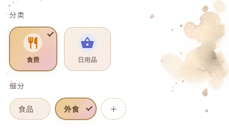
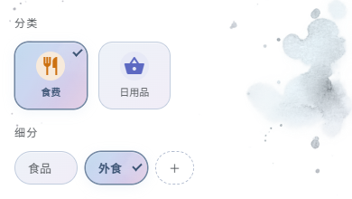
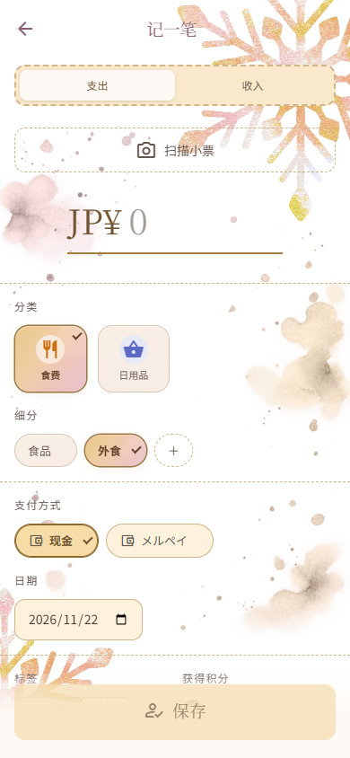
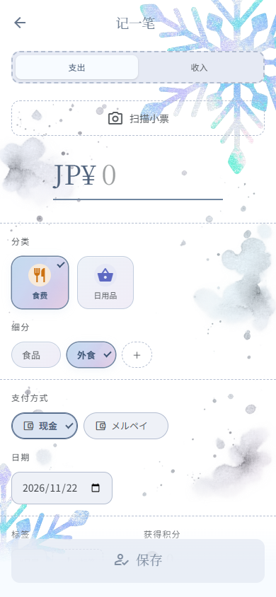

<!doctype html>
<html lang="zh-CN">
<meta charset="utf-8">
<meta name="viewport" content="width=device-width,initial-scale=1">
<title>冬雪分类 · 满框晕染</title>
<style>
body{margin:0;padding:24px;background:#F7F7F8;color:#42444A;font:15px/1.6 system-ui}
main{max-width:850px;margin:auto}h1{font-size:23px;margin:0 0 8px}h2{font-size:18px;margin:24px 0 12px}
p{margin:0 0 20px}.pages{display:grid;grid-template-columns:repeat(2,minmax(0,1fr));gap:28px}
figure{margin:0}figcaption{margin-bottom:10px}img{display:block;width:100%;height:auto;max-width:390px}
a{color:#596F8E}table{width:100%;border-collapse:collapse;margin:20px 0}th,td{text-align:left;padding:10px;border-bottom:1px solid #DADDE2}
footer{margin-top:24px}@media(max-width:650px){.pages{grid-template-columns:1fr}figure{max-width:390px;margin:auto}}
</style>
<main>
<h1>分类区 · 满框晕染</h1>
<p>选中后的主题色晕染铺满整个框；未选中保留更浅的主题底色。分类图标保持原色。</p>
<table><thead><tr><th>主题</th><th>未选中</th><th>选中</th></tr></thead><tbody>
<tr><td>暖金</td><td>浅米金、粉米色</td><td>香槟金、蜜桃粉满框晕染</td></tr>
<tr><td>银灰</td><td>浅银蓝、淡紫灰</td><td>冰蓝、淡紫粉满框晕染</td></tr>
</tbody></table>
<div class="pages">
<figure><figcaption>暖金：食费、外食为选中状态</figcaption><a href="winter-category.png"></a></figure>
<figure><figcaption>银灰：食费、外食为选中状态</figcaption><a href="winter-silver-category.png"></a></figure>
</div>
<h2>实际页面</h2><div class="pages">
<figure><figcaption>冬雪 · 暖金</figcaption><a href="winter-page.png"></a></figure>
<figure><figcaption>冬雪 · 银灰</figcaption><a href="winter-silver-page.png"></a></figure>
</div>
<footer><p>实际 App 页面叠加分类预览样式，使用隔离示例数据。此版尚未接入或发布。</p><a href="preview.css">独立样式</a> · <a href="checks.json">页面检查</a> · <a href="contrast-bounds.json">文字对比度检查</a></footer>
</main>
</html>
